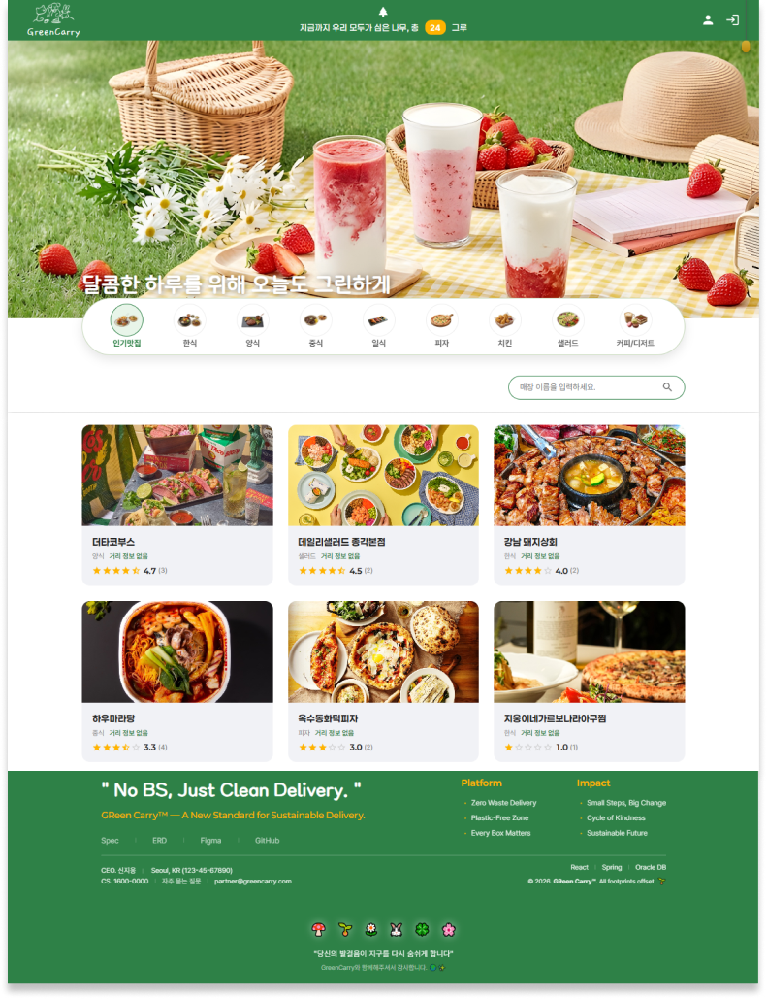
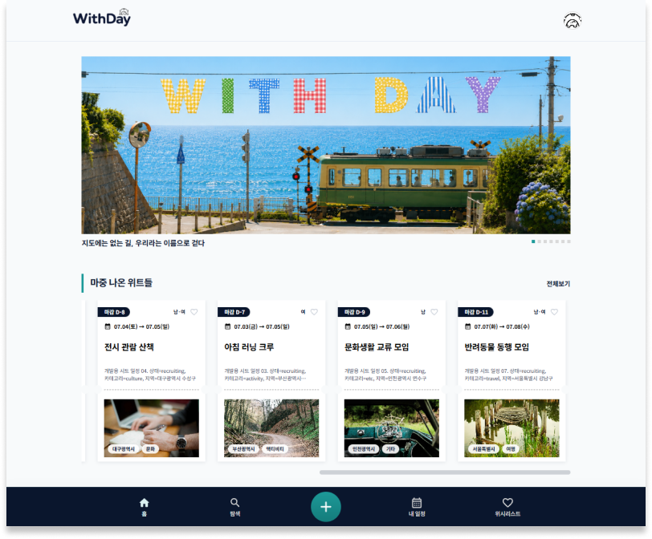

Front-end
JavaScript / React / React Router / CSS / CSS Modules / Axios / Vite / HTML
코드로 디자인을 그리는 프론트엔드 개발자 이시연
디자인과 기획을 거쳐 개발까지, 돌아온 길이 오히려 더 넓은 시야를 만들어줬습니다. 한번 짠 코드도 계속 곱씹고, 익숙해질 때까지 오래 머금는 편입니다. 그렇게 쌓인 것들이 어느 순간 자연스럽게 손에서 나올 때, 그게 가장 좋습니다.
기획, 화면 설계, DB 설계, API 구현, 프론트엔드 연동, 배포까지 경험하며 실제 서비스 흐름을 이해하는 개발자로 성장하고 있습니다.
React · Spring Boot · AWS
SQL · Database · Data Modeling
Photoshop · Illustrator
Image Editing · Vector Graphic
JavaScript / React / React Router / CSS / CSS Modules / Axios / Vite / HTML
Java / Spring Boot / MyBatis / REST API / JWT
MySQL / Oracle
AWS (EC2 · RDS · S3 · CloudFront) / Docker / GitHub Actions / Vercel / Render
Visual Studio Code / IntelliJ IDEA / Git / GitHub / Figma / Notion / ERD Cloud
탄소 절감을 위한 친환경 배달 서비스 플랫폼
다회용기 사용과 친환경 배달 방식을 기반으로 설계한 탄소 절감 음식 주문 플랫폼입니다. 탄소 절감 데이터가 사용자 화면에 정확하게 반영될 수 있도록 API 연동과 데이터 흐름을 고려해 구현했습니다.
| Frontend | JavaScript · React · Axios · CSS Modules |
|---|---|
| Backend | Java · Spring Boot · MyBatis |
| Database | Oracle |
| Service | Cloudinary |

GitHub일정을 함께할 사람을 모집하는 동행 매칭 플랫폼
여행, 식사, 문화생활 등 함께할수록 더 즐거운 일정을 연결하는 동행 플랫폼입니다. 추천 일정 탐색부터 생성, 참여 신청, 승인, 관리까지 이어지는 흐름을 통해 신뢰도 있는 일정 경험을 제공하고자 했습니다.
| Frontend | JavaScript · React · React Router · Axios · CSS Modules |
|---|---|
| Backend | Java · Spring Boot · MyBatis |
| Database | MySQL |
| Service | Cloudinary |
